1080 × 1920. Locked copy, real Helvetica and distinct original photos. Local review only. Slide 9 is a silent 27-second motion preview; your recorded take is still needed.
Download the stills, preview and recording script · Recording script · Build notes
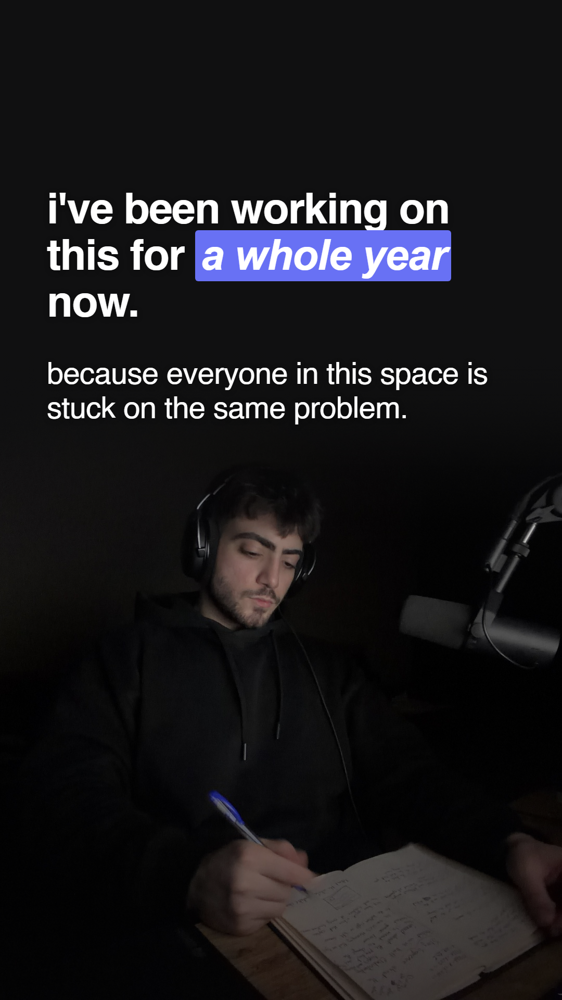
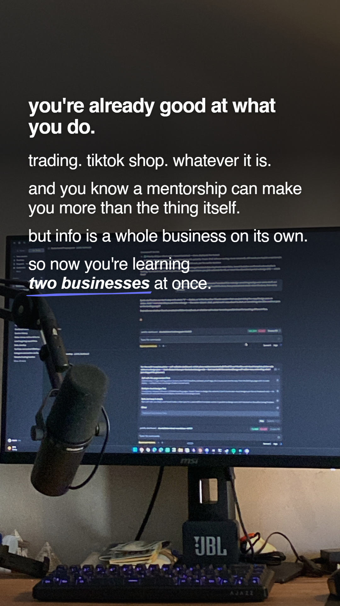
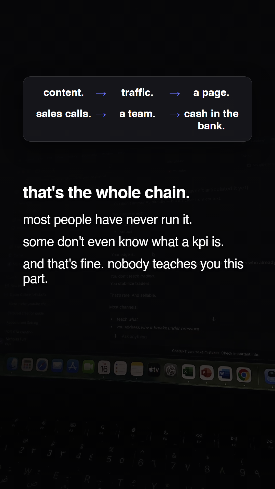
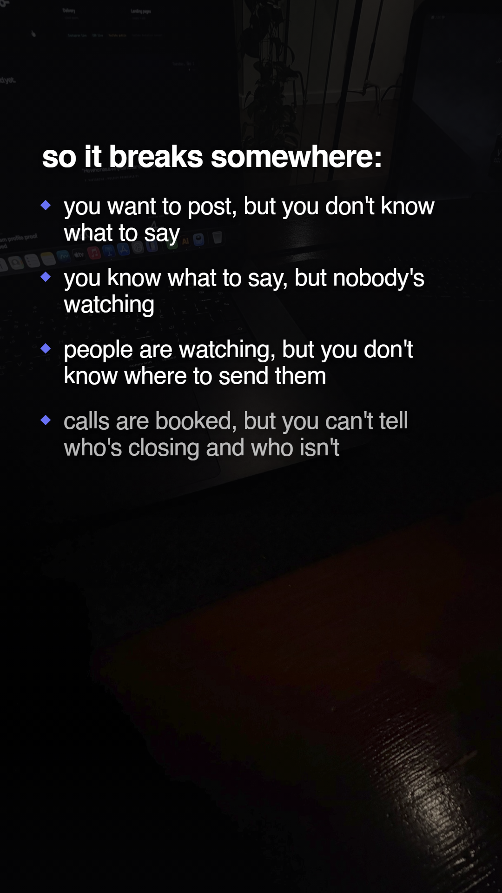
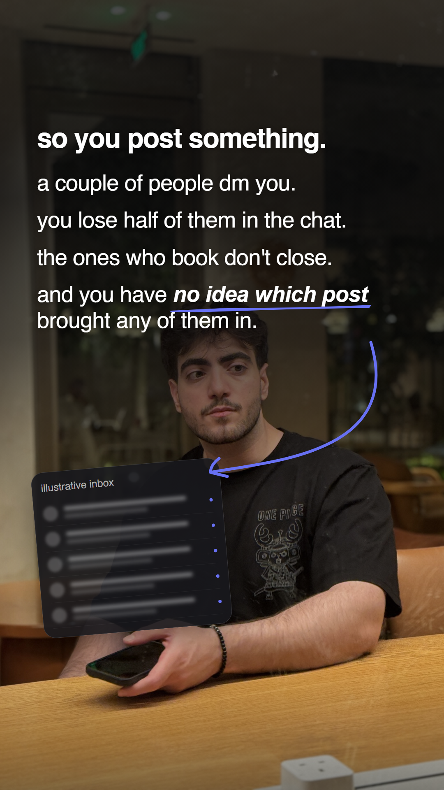
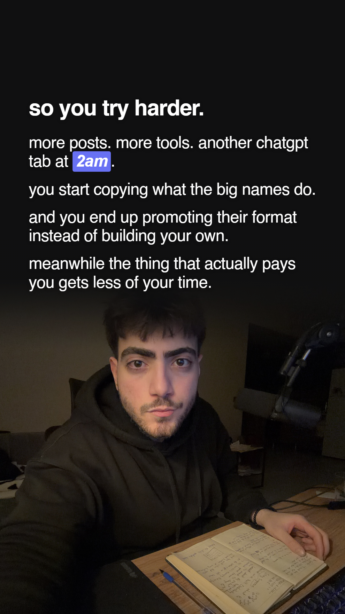
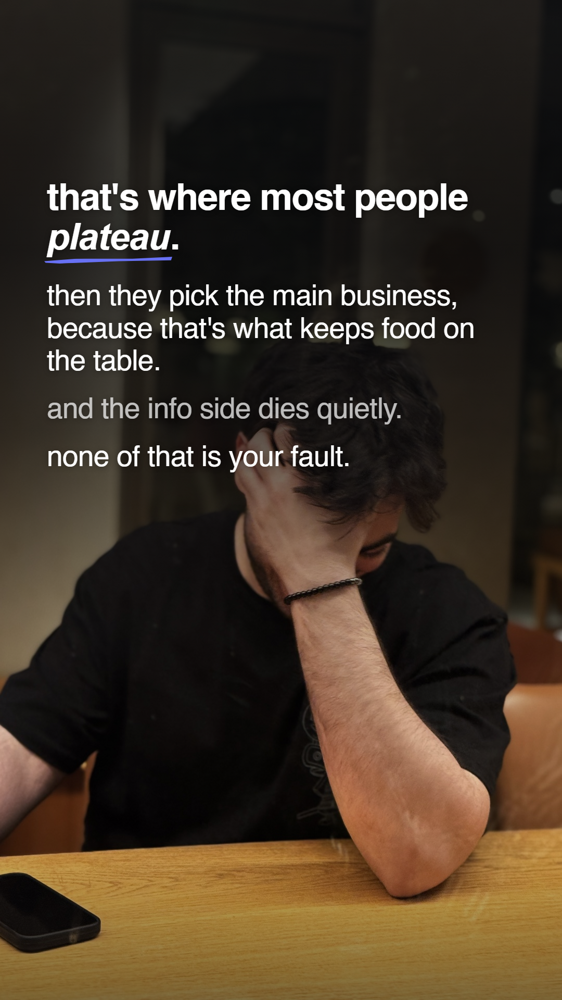
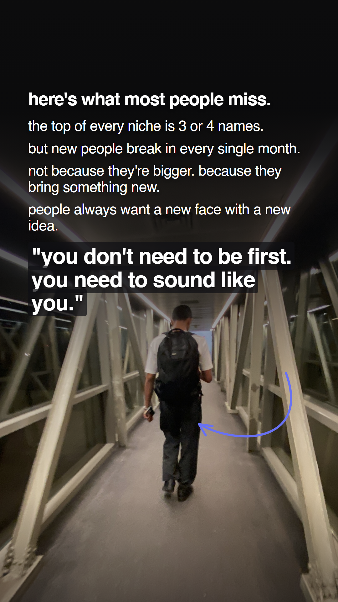
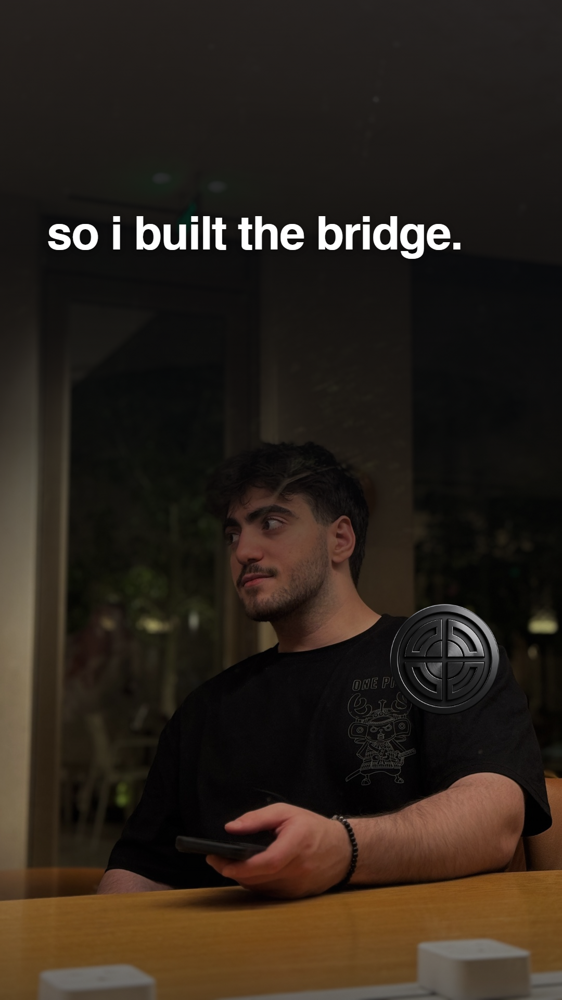
Silent animatic, provisional subtitle timing.
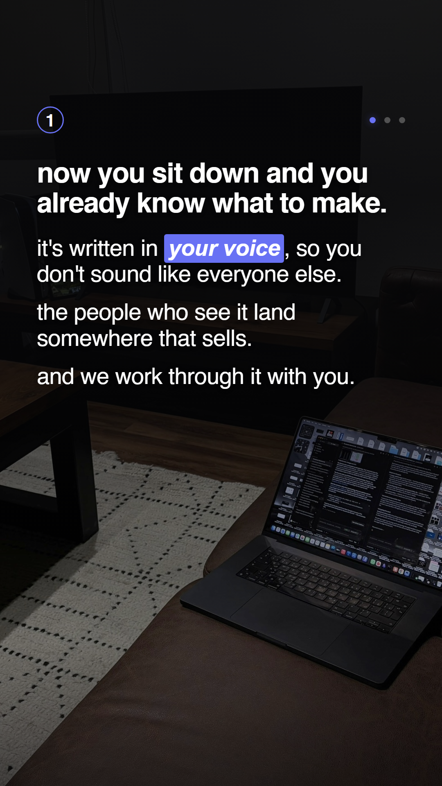
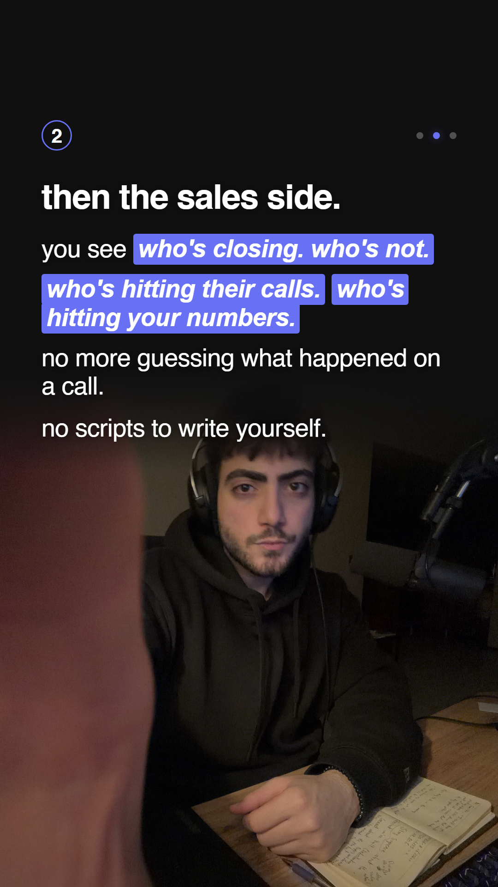
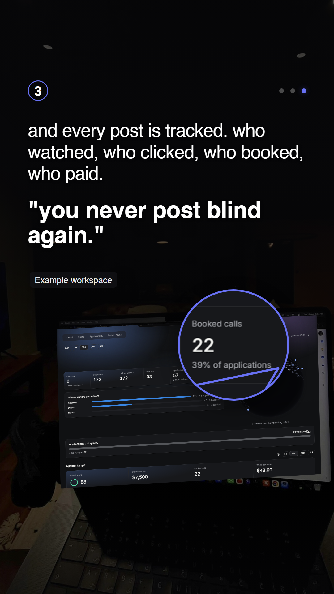
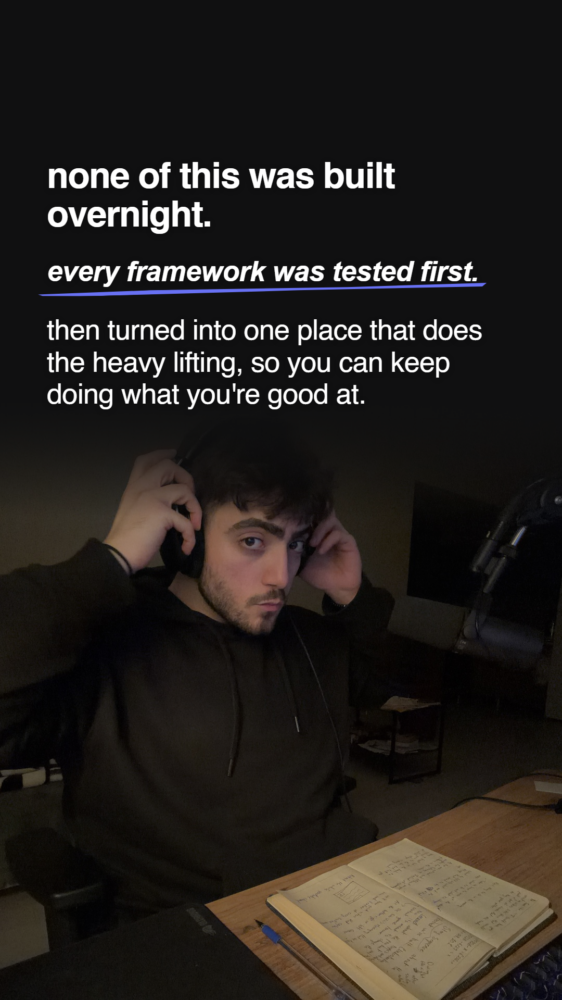
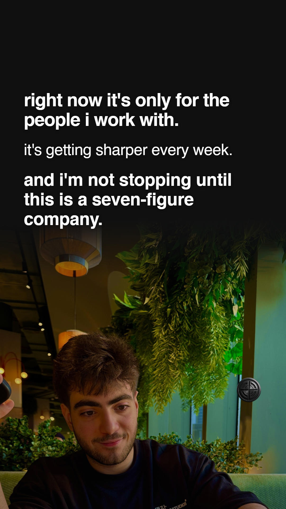